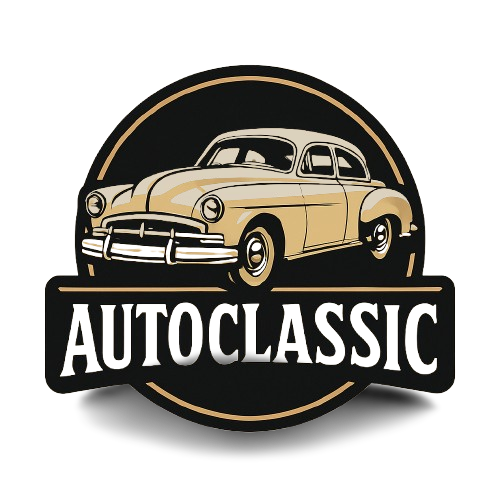

<header class="cabecalho ff-inter">
  <div class="logo">
    <a href="#" onclick="location.reload();">
      
    </a>
    <p>Preserve os grandes clássicos que definiram a era de ouro do automobilismo no Brasil.</p>
  </div>

  <div class="link">
    <a href="">Home</a> 
    <a routerLink="/formulario">Adicionar Clássicos</a>
  </div>
</header>


